D.E. Shaw design task · AI trade ideas
An AI trade dashboard that helps investment teams trust, test and act on every idea
PRODUCT DESIGN
48-HOUR DESIGN TASK
DESKTOP-FIRST
7 SCREENS
View full case study on Behance
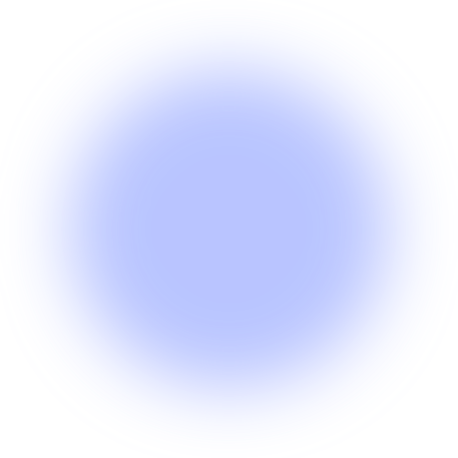
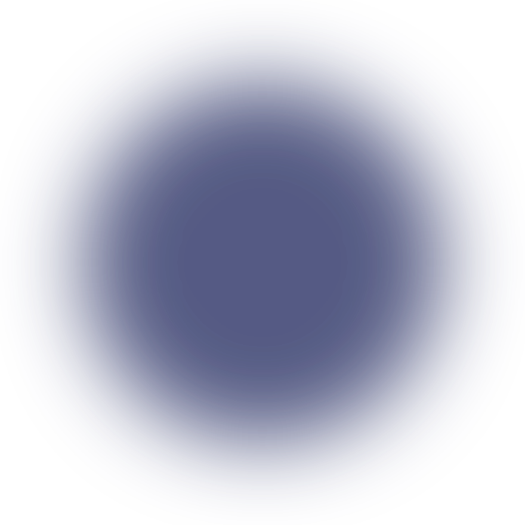
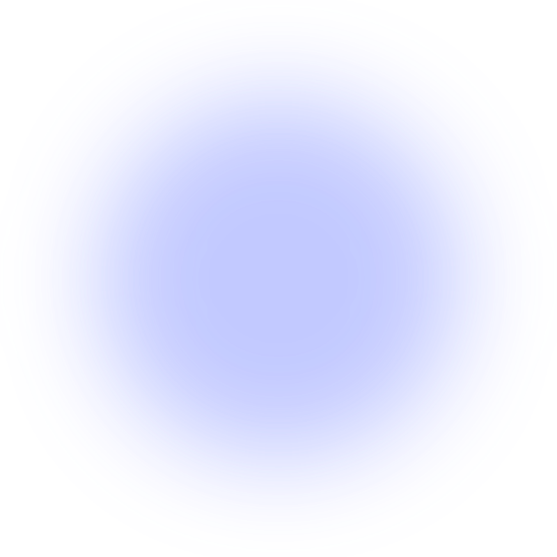
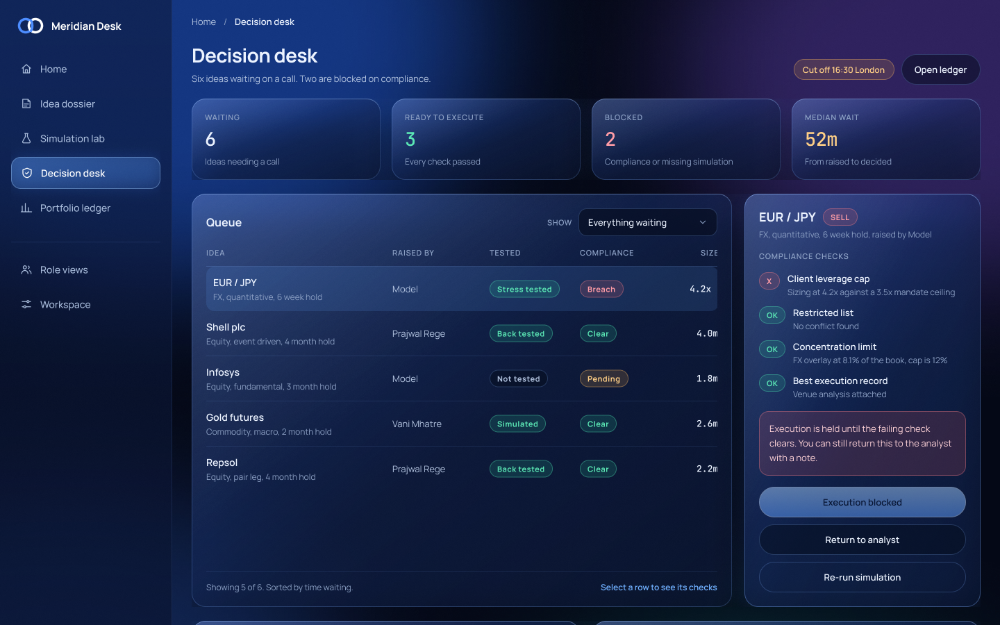
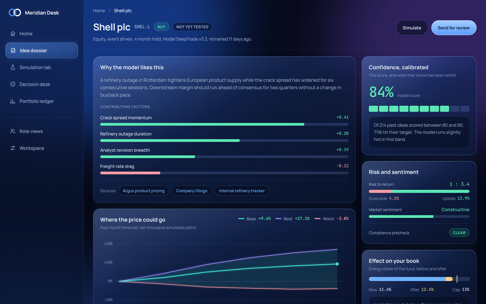
Go back
01
OVERVIEW
02
CONTEXT
03
PROBLEM
04
ITERATIONS
05
FINAL DESIGN
Idea dossier
Simulation lab
Decision desk
06
OUTCOME
01 / 06
OVERVIEW
About Meridian Desk
Meridian Desk is a desktop-first dashboard that turns AI-generated trade ideas into decisions a team can trust. Analysts, traders and portfolio managers see why the model likes an idea, test it, check it against firm rules and act on it, in one workspace.
Overview
Producing ideas is the easy part. The hard part is helping people decide which ones to act on, and showing afterwards whether that call was right.
My role
Product designer on a 48-hour D.E. Shaw design task. I learnt the domain, mapped the stakeholders, and designed the flows, interaction patterns and every screen.
Scope
Domain research
Stakeholder map
Competitive research
User flow
Design system
7 screens
Outcomes
8
Problems mapped from the brief and research
6
Design opportunities turned into features
5
Features added beyond the brief
02 / 06
CONTEXT
Seven roles touch an idea
before it becomes a trade.
I had no trading background, so I started by learning the vocabulary and the path an idea takes inside an investment firm: what people need to see before they trust a model, and which rules decide whether an idea can move.
Analyst
Builds the case. Needs evidence, sources and what would prove it wrong.
Trader
Acts on approved ideas. Needs sizing, compliance state and the exit window.
PM
Owns the book and approves. Needs exposure, overlaps and past hit rate.
Three people use the dashboard every day. Risk and compliance, data science, platform and senior management decide what it is allowed to do.
BEHIND ALL OF THEM
The firm’s clients, such as pension funds, insurers and endowments, never see the tool, but every decision in it is made with their money.
03 / 06
PROBLEM
AI ideas are only useful if a team
can trust them and act on them.
The brief and the research pointed at the same gap. People do not need more ideas. They need to know which ones deserve attention, why, and what happens to the firm if they say yes.
WHAT EACH USER STRUGGLES WITH
PRAJWAL, EQUITY ANALYST
“Too much information, not enough explanation.”
MICK, TRADER
“Delayed or stale signals mean missed trades.”
VANI, PORTFOLIO MANAGER
“Insights are split across too many tools.”

CORE PROBLEM STATEMENT
“How might we turn an AI score into a decision a team can stand behind, with the reasons, the risks and the firm’s rules visible before anyone says yes?”
Three problems that mattered most
Score: 84%
Why?
NO REASON
Ideas arrive without a reason
Reasoning is a black box, so analysts cannot check the claim.
84% confident
Right how often?
NO TRACK RECORD
Confidence has no history
A score means little without how often that band was right.
Approve
Blocked
LATE COMPLIANCE
Rules show up too late
Compliance blocks appear at the last step, after the work is done.
04 / 06
ITERATIONS
Checking the first screen at
laptop height changed the layout
I set Home to a 1440 by 900 laptop view to see what someone sees before scrolling. The fund charts filled the screen, and the AI ideas, the whole point of the brief, were cut off at the bottom.
BEFORE
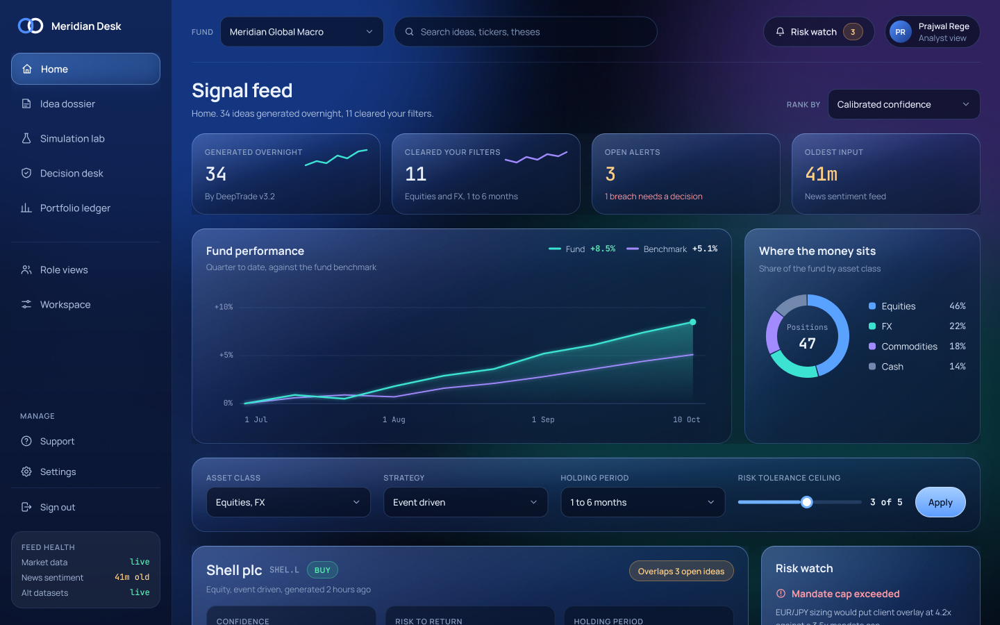
Charts first. The top idea is cut off.
AFTER
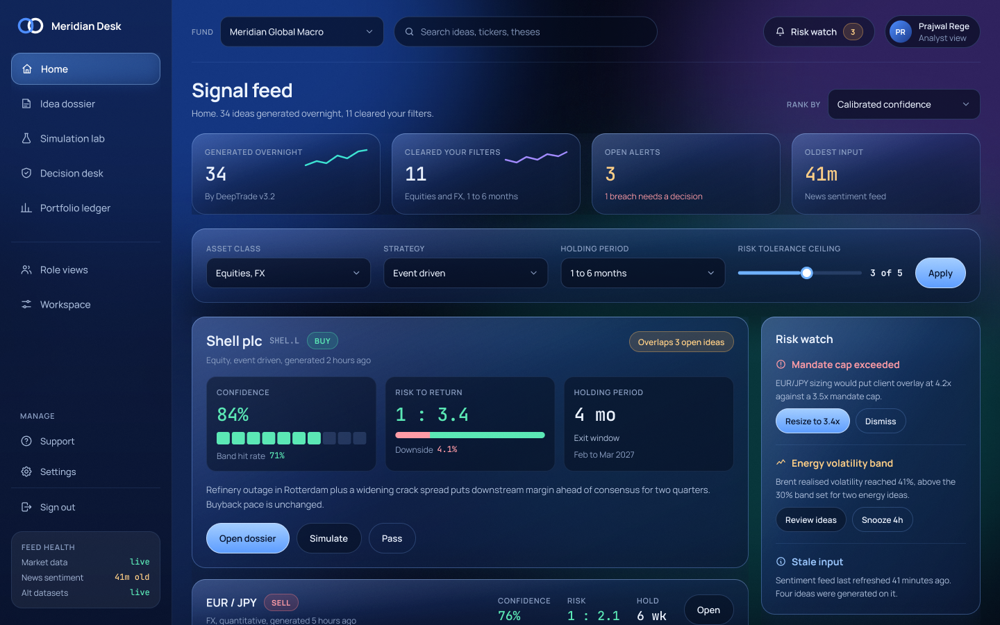
Ideas and Risk watch first. Charts one scroll down.
WHAT WAS WRONG
Charts led the page
Fund performance took the first screen instead of today’s ideas.
WHAT WAS WRONG
Top idea cut off
The one thing the brief asked for sat below the fold.
WHAT WAS WRONG
Risks out of sight
Open alerts needed a scroll before anyone saw them.
Ideas and Risk watch now come first, so the first screen answers the brief before anyone scrolls.
05 / 06
FINAL DESIGN
The final design,
piece by piece
Three principles from the research shaped every screen:
01
Trust before
speed.
02
Evidence beside
the call.
03
Rules visible
early.
STRUCTURE AND FLOW
One idea, followed from the feed to the ledger
Every step of a trade lives in one place in the product, except placing the order, which stays in the firm’s order system.
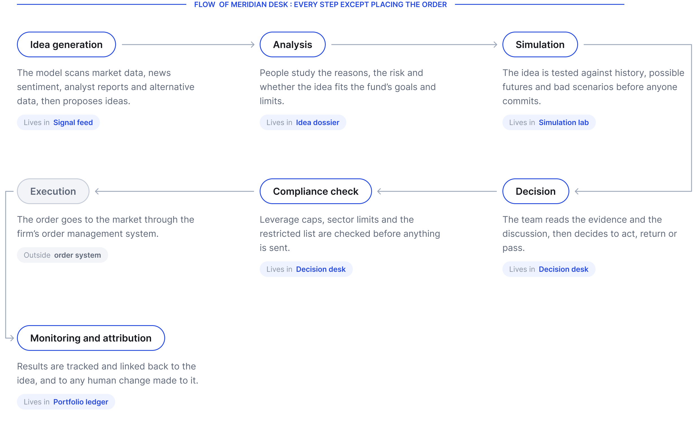
Idea dossier
Why, what could happen, what proves it wrong
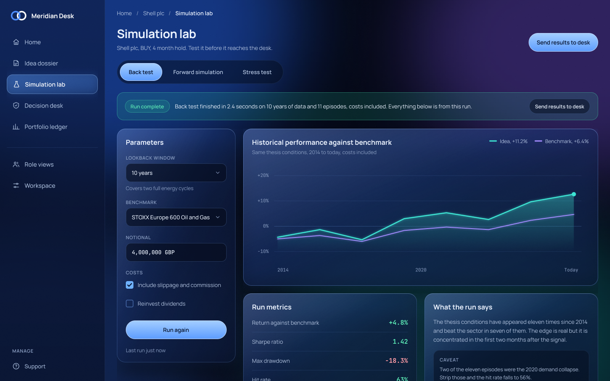
Simulation lab
Back test, forward and stress test
Decision desk
Compliance checks, approval and audit trail
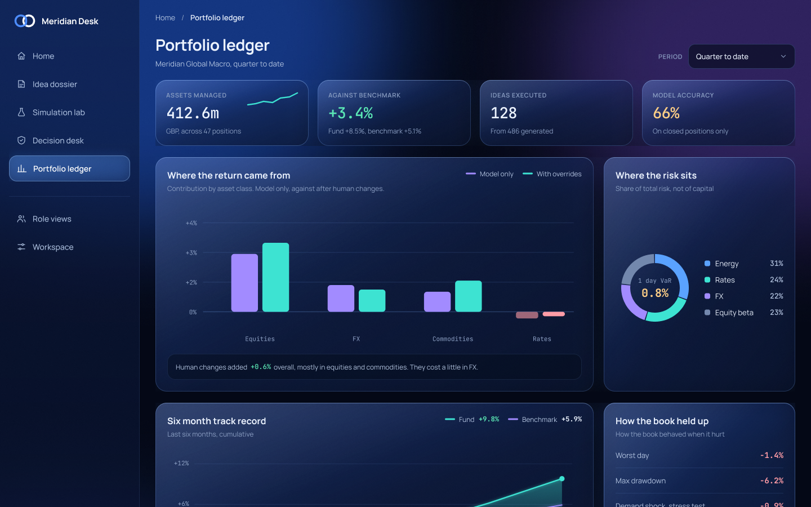
Portfolio ledger
Did the call, and the human change, work?
Seven screens in a dark glass style built for long sessions. Colour appears only where it means something: green high, amber middling, red low.
06 / 06
OUTCOME
What the brief asked for,
and what I added
Every feature in the brief is covered. Five more came out of the research, each one closing a gap the brief did not name.
FROM THE BRIEF
— Signal feed, filters and contributing factors.
— Simulation lab, decision desk, discussion and portfolio ledger.
ADDED BY ME
— Calibrated confidence and what would change my mind.
— Overlap check, feed health and pass with a reason.
A fast decision on a score nobody understands is not a good decision.
THAT WAS THE SHORT VERSION
The full case study has the field research, personas, user flows and every iteration behind each decision.
View full case study on Behance

Next project
Signease
01
Bridging communication through Indian Sign Language
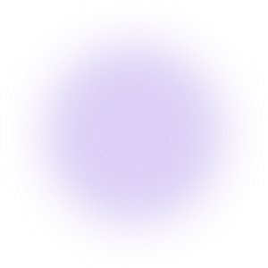